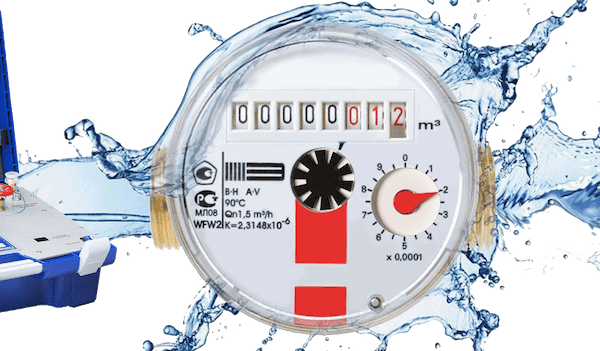

Оформить заявку
О нас
Компания ПРОФТЕХКОМ была создана в 2019 году с целью предоставления услуг
в области стандартизации и метрологии населению и организациям. Это
молодая
и динамично развивающаяся компания. Специализируемся на поверке индивидуальных
приборов учёта воды. В Воронеже и Воронежской области работаем
по франшизе
компании ООО МС «ПрофТехКом» имеющую аккредитацию RA.RU.312822 дающую
право
вести деятельность на всей территории России. Наша компания зарекомендовала себя
положительно уже более чем в 30 городах России. Работы выполняются
квалифицированными сотрудниками. Все наши инженеры имеют образование в области
метрологии.Выполняем поверку счетчиков холодной и горячей воды на дому без
снятия
и нарушения пломб до 20 диаметра.
Почему нас выбирают и рекомендуют:
- На рынке 4 года
- 100 000+ Результатов поверок во ФГИС «АРШИН»
- Имеем аккредитацию и все необходимые разрешающие документы
- Выполнение процедуры поверки с помощью специализированного оборудования
- Индивидуальный подход к каждому клиенту
- При отрицательном результате поверки стоимость услуги не взимается
Лицензии
Обязанность проведения поверки средств измерений, в том
числе
индивидуальных приборов учета, установлена статьей 13 Федерального закона
от 26 июня 2008 года № 102-ФЗ «Об обеспечении
единства
измерений», в соответствии с которой: Средства измерений,
предназначенные для применения в сфере государственного регулирования
обеспечения
единства измерений, до
ввода в эксплуатацию, а также после ремонта подлежат первичной поверке,
а в процессе эксплуатации - периодической поверке.
По законодательству
соблюдать сроки поверки счетчика должен сам владелец квартиры или
частного дома. Если вовремя не провести поверку,
то прибор
будет считаться неисправным, а переданные по истечение межповерочного
интервала показания — недостоверными и ресурсоснабжающие организации
вправе
выставлять счет по повышенному коэффициенту, что влечет за собой
увеличение
платы за коммунальные услуги. Как правило межповерочный интервал горячей воды
4 года, холодной воды 6 лет.
Важно знать!
Поверку средств измерений осуществляют только
аккредитованные компании в соответствии с законодательством
Российской Федерации об аккредитации в национальной системе аккредитации
на проведение поверки средств измерения.
Услуги

*Акция действительна до 31.12.2023
600 руб
Акция!
Пенсионерам
скидка 50 руб.*
Пенсионерам
скидка 50 руб.*
Вам мы гарантируем!
- Обсуждение деталей заявки
- Приезд метролога в назначенное время
- Выполнения поверки со специализированными приборами
- Оформления и выдача документов на месте оказания услуги
- Отсутствие навязанных услуг
- Внесение данных о поверке в реестр ФГИС «АРШИН»